中国 Great Wall Gugong Ming Tombs Yiheyuan Longmen Xian Terracotta Chengdu Kunming Shilin Guilin Suzhou Liuyuan Zhouzhuang Shanghai Eclipse Xiamen Chengqilou Hainan Mogao Mingshashan White Horse Pagoda Xiqian Hanchangcheng Yang Guan Yumen Guan Yulin Suoyangcheng Dangjinshan Miran Qarqan Taklamakan Desert Keriya Hotan Merkit Kashgar Id Kah Apak Hojar Karakoram Karakul Kashgar-Kuqa Subashi Yanshuigou Kizil Jiaohe Gaochang Astana Huoyanshan Bezeklik Tuyugou Urumqi Ta'er Riyueshan Qinghai Qinghai Tibet Railway Lhasa Jokhang Norbulinka Sera Yaowangshan Kamba Yamdrok Kharo Pelkor Chode Tashilhunpo Shalu Tsuo Sakya Gyatso Chomolungma Base Camp Cho Oyu Shishapangma Tong Zhangmu
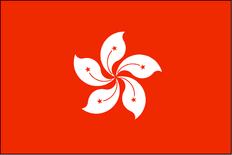香港 Hong Kong Harbour Lights Tower Man Mo Wong Tai Sin Cathedral Aberdeen Tian Tan Tai O Lamma Cheung Chau Peng Chau
 澳門
Macau Na Tcha
Senado
Dominic A-Ma
Tower Casion
澳門
Macau Na Tcha
Senado
Dominic A-Ma
Tower Casion
台湾 Taipei Sun Moon Lake Taroko Kenting
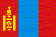モンゴル Ulaanbaatar Gandan Zaisan Naadam Wrestling Palace Turtle Ariyabal Chinggis Khan Nalaikh Bayantsogt Erdene Zuu Tsetserleg Grazing Tsenkher Bayanzag Moltsog Yolyn Am Ger Moron Uushigiin Uver Khuvsgul
韓国 Seoul Gyeongbokgung Changdeokgung Jongmyo DMZ Suwon Jeongrimsaji Muryeong Yousung Gyeonggijeon Haeinsa Hahoe Cheonmachong Cheomseongdae Seokguram Bulguksa Busan Samseonghyeol Manjanggul Seongsan Jeongbang
フィリピン Manila Banaue Bontoc Sagada Halsema Baguio Santa Maria Vigan Bantay Paoay Villa Laoag Chocolate Hills Tarsier Loboc Panglao Cebu
 ベトナム Hà Nội
Thăng Long Vịnh
Hạ Long Sửng Sốt Ti Tốp Tràng An
Hoa Lư Thành Nhà Hồ
Đường Sắt
Phong Nha Tiên Sơn Hiền Lương Huế
Tự Đức Thiên Mụ Đà Nẵng
Ngũ Hành Sơn
Hội An Mỹ Sơn
Chiên Đàn
Hưng Thạnh Tháp Nhạn
Po Nagar
Pôklông Garai Po Ro Me
Đồi Cát Vàng Đồi Cát Trắng Suối Tiên
Po Hài Củ Chi Mỹ Tho
Cái Bè
Sài Gòn
ベトナム Hà Nội
Thăng Long Vịnh
Hạ Long Sửng Sốt Ti Tốp Tràng An
Hoa Lư Thành Nhà Hồ
Đường Sắt
Phong Nha Tiên Sơn Hiền Lương Huế
Tự Đức Thiên Mụ Đà Nẵng
Ngũ Hành Sơn
Hội An Mỹ Sơn
Chiên Đàn
Hưng Thạnh Tháp Nhạn
Po Nagar
Pôklông Garai Po Ro Me
Đồi Cát Vàng Đồi Cát Trắng Suối Tiên
Po Hài Củ Chi Mỹ Tho
Cái Bè
Sài Gòn
 ラオス
Vientiane Patuxai Haw Phra Kaew Wat Si
Saket Buddha Park Pakxe Wat Phu
Khon Vang Vieng
Jars Site Luang
Phrabang Wat Xieng Thong Wat Mai
Wat Chom Si Ban Xieng
Lom Pak Ou
ラオス
Vientiane Patuxai Haw Phra Kaew Wat Si
Saket Buddha Park Pakxe Wat Phu
Khon Vang Vieng
Jars Site Luang
Phrabang Wat Xieng Thong Wat Mai
Wat Chom Si Ban Xieng
Lom Pak Ou
カンボジア Angkor Wat Angkor Thom Taprom Banteay Srei Phnom Penh
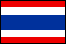タイ Bangkok Pattaya Ayutthaya Chiang Mai
マレーシア Johor Bahru Kinabalu Poring Rafflesia Bilit Sepilok
ブルネイ Brunei Mosque Kampong Ayer Gadong
シンガポール Singapore Temple Mosque
インドネシア Jakarta Borobudur Prambanan Solo Bali
ミャンマー Yangon Shwedagon Shwethalyaung Kyaiktiyo Bagan Shwezigon Ananda Phaya Popa Sale Po Win Daung Thanboddhay Bodhi Tahtaung Kaunghmudaw Mahamuni U Bein Pindaya Inle Phaung Daw Oo Shwe Yaunghwe Kakku
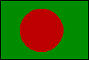バングラデシュ Dhaka Star Mosque Kawran Paharpur Rajshahi Puthia Kushtia Mongla Chandpai Harbaria Kachikhali Katka
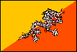ブータン Thimphu Takin Shimtokha Chuzom Paro Dzong Tsechu Taktsang Phuntsholing Dochu Punakha Chimi Wangdue Pele Chendebji Trongsa Yutong Jakar Jampey Membartsho Ura Thrumshing Mongar Kori Gom Trashiyangtse Choruten Rangjung Trashigang Kanglung Samdrup Jongkhar
ネパール Kathmandu Bouddhanath Swayambhu Patan Bhaktapur Pashupatinath Nagarkot Everest Lhotse Makalu Manaslu Dhaulagiri Marpha Muktinath Annapurna Barahi Davis Chitwan Muglin
インド India Gate Lakshmi Narayan Jama Masjid National Museum Raj Ghat Red Fort Qutub Minar Humayun Tomb Jaipur Hawa Mahal Jantar Mantar Jal Mahal Amber Fatehpur Sikri Agra Fort Taj Mahal Itmad Ud Daulah Shatabdi Orchha Khajuraho Sarnath Varanasi Vishwanath Durga Bharat Mata Bodh Gaya Giant Buddha Nippon Temple Niranjana Dungeshwari Rajgir Venu Van Nalanda Patna Gangtok Enchey Tibetology Institute Ganesh Tok Rumtek Kanchenjunga Pemayangtse Chuchen Jorethang Darjeeling Railway Zoo Ghoom Coronation Bridge Longview Calcutta Pareshnath Victoria St.Paul Teresa Chennai Museum Ekambareswarar Kailashanathar Vaikunta Perumal Mahabalipuram Pancha Arjuna Ganesha Krishna Meenakshi Thirumalai Nayakkar Comorin Kochi Bombay Elephanta Bibi Ka Maqbara Panchakki Daulatabad Ellora Ajanta Ahmedabad Hathee Singh Dada Hari ni Vav Adalaj Vav Lothal Aina Mahal Kutch Museum Bhuj White Rann Dholavira Modhera Rani ki Vav Mt.Abu Dilwara Jodhpur Mehrangarh Khuri Jaisalmer Fort Temple Festival Haveli
スリランカ Anuradhapura Sigiriya Polonnaruwa Dambulla Kandy Yala Weligama Galle
パキスタン K2 Karachi Chaukundi Makli Mohenjodaro Kot Diji Uch Multan Harappa Lahore Mosque Fort Museum Garden Wahgah Rohtas Fort Taxila Islamabad Chilas Nanga Parbat Skardu Karakoram Karimabad Rakaposhi Balitit Fort Nagar Attabad Passu Karakoram Highway
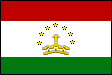タジキスタン Panjikent
 キルギス Bishkek
Balasagun Ak Beshim Issyk Kul lake
Cholpon Ata
キルギス Bishkek
Balasagun Ak Beshim Issyk Kul lake
Cholpon Ata
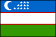ウズベキスタン Tashkent Khiva Bukhara Samarkand Shah-i-Zinda Shahrisabz
トルクメニスタン Kunya Urgench Ashgabat Nisa Anau Merv Karakum Desert
イラン Tehran Isfahan Imam Mosque Jame Mosque 33 Arches Bridge Pasargadae Persepolis Naqshe Rustam Shiraz Bishapur Abyaneh Na'in Yazd Tower of Silence Atashkadah Arge Bam Arge Rayen Kerman Chogha Zanbil Shush Shushtar Sasanian Bridge Behistun Soltaniyeh Takhte Soleyman Kabud Mosque Astara Masouleh
クウェート Kuwait Mosque Museum Market
バーレーン Bahrain Fort Mound Mosque House Camel Farm Causeway
 カタール
Doha Waqif
Mosque
Pearl Qatar
カタール
Doha Waqif
Mosque
Pearl Qatar
 アラブ首長国連邦
Abu Dhabi Dubai
Souk Burj Al Arab
Al Ain
アラブ首長国連邦
Abu Dhabi Dubai
Souk Burj Al Arab
Al Ain
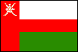オマーン Muscat Mosque Nizwa Falaj Daris Souq Birkat Al Mouz Bahla Fort Jibreen Castle Tanuf Salalah
 イエメン
Sana'a
Wadi Dhar Amran Thula
Hababa Kawkaban Al Hajjara
Manakhah Hudayda Zabid
Mocha Taiz
Jiblah Ibb
イエメン
Sana'a
Wadi Dhar Amran Thula
Hababa Kawkaban Al Hajjara
Manakhah Hudayda Zabid
Mocha Taiz
Jiblah Ibb
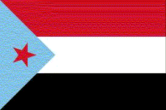南イエメン Aden Gulf of Aden Mukalla Wadi Doan Al Hajarain Tarim Saywun Shibam
 サウジアラビア
Jeddah
サウジアラビア
Jeddah
ヨルダン Aqaba Wadi Rum Petra Dead Sea Madaba Amman Amra Jerash
 レバノン
Tyre Sidon Beirut
Jeita Anjar
Baalbek
Byblos Qadisha
Tripoli
レバノン
Tyre Sidon Beirut
Jeita Anjar
Baalbek
Byblos Qadisha
Tripoli
シリア Bosra Damascus Omayyad Maalula Palmyra Hama Aleppo Ebla Chevaliers
 トルコ Istanbul
Topkapi Palace Aya Sofia Blue Mosque
Kariye Rüstem Paşa
Bazaar
Bridge New City
Dolmabahçe Basilica
Cistern
Bursa Troy Bergama
Asklepion
Izmir Efes
Kusadasi
Aphrodisias Pamukkale
Konya Sultanhani Ankara
Tuz Cappadocia Goreme
Kaymakli
Bodrum Caunos
Xanthos Letoon
Kekova
Myra Chimera
Phaselis Termessos Antalya
Aspendos Side
Alanya
Uzuncaburç Cennet
Cehennem Kizkalesi Tarsus
Adana Antakya
Harran Urfa
Nemrut Diyarbakir
Van İshak Paşa
Ararat Ani Erzurum
Trabzon
Sumela Safranbolu
Lefkoşa Kyrenia Bellapais
Famagusta Salamis
Barnabas
トルコ Istanbul
Topkapi Palace Aya Sofia Blue Mosque
Kariye Rüstem Paşa
Bazaar
Bridge New City
Dolmabahçe Basilica
Cistern
Bursa Troy Bergama
Asklepion
Izmir Efes
Kusadasi
Aphrodisias Pamukkale
Konya Sultanhani Ankara
Tuz Cappadocia Goreme
Kaymakli
Bodrum Caunos
Xanthos Letoon
Kekova
Myra Chimera
Phaselis Termessos Antalya
Aspendos Side
Alanya
Uzuncaburç Cennet
Cehennem Kizkalesi Tarsus
Adana Antakya
Harran Urfa
Nemrut Diyarbakir
Van İshak Paşa
Ararat Ani Erzurum
Trabzon
Sumela Safranbolu
Lefkoşa Kyrenia Bellapais
Famagusta Salamis
Barnabas
キプロス Nicosia Limassol Apollo Hylates Kourion Kolossi Paphos Dionysus Tombs Petra tou Romiou Aphrodite Baths Kykkos Podithou Agios Nikolaos Omodos Lambouri Larnaca Salt Lake
アゼルバイジャン Maiden Tower Baku Baku Bay Yanan Dagh Gobustan Shemakha Sheki
グルジア Tbilisi Sioni Jvari Svetitskhoveli Ananuri
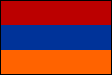アルメニア Yerevan Erebuni Echmiadzin Hripsime Khor Virap Garni Geghard Sevanavank Haghpat
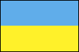ウクライナ Kiev Pecherska Lavra Lviv Ternopil Chernivtsi Odessa Yalta Livadia Palace Swallow's Nest Foros Sevastopol Bakhchisaray Massandra Simferopol
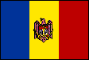モルドバ Chisinau Moldova Wine Cave
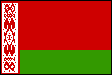ベラルーシ Minsk Mir Castle Belovejskaya Brest
リトアニア Vilnius Cathedral Ausros St.Anne Gediminas St.Peter St.Paul Traku Kaunas Klaipeda Kursiu Kryziu
ラトビア Riga Doms Pils St.James Blackheads Jugendstil Rundales
エストニア Tallinn Raekoja Toompea Toomkirik Nicholas Kadriorg Song Festival Grounds Muhu Kuressaare Angla
 ロシア Moscow
Kremlin Cathedral
Bolshoi Novodevichy
Tretyakov
Sparrow Hills
Metro Station Yaroslavsky
Leningradsky Sergiyeva
Rostov Yaroslavl
Uspensky
Volga Spassky Suzdal
Museum
Evfimevsky Pokrovsky
Vladimir Uspensky
Pokrov
Petrozavodsk
Station Kizhi
Svirsky Sankt Peterburg
Hermitage Isaac
Kazan
Nikolsky
Mariinsky
Letniy Sad
Moskovsky
Vitebsky Peterhof Catherine
Novgorod Yuriev
Tver Klin Kirov PermII Perm
Railway Ekaterinburg Omsk
Novosibirsk Railway Barabinsk Novosibirsk Kemerovo
Railway
Krasnoyarsk
Ilanskaya
Nizhneudinsk
Irkutsk
Railway
Zima Irkutsk Ulan-Ude Khilok Chita Karymskaya Ingoda River Chernyshevsk Erofei Pavlovich
Magdagachi Belogorsk
Amur Railway
Khabarovsk
Vyazemsky Ruzhino
Ussuriysk Amur Bay
Vladivostok
Station
ロシア Moscow
Kremlin Cathedral
Bolshoi Novodevichy
Tretyakov
Sparrow Hills
Metro Station Yaroslavsky
Leningradsky Sergiyeva
Rostov Yaroslavl
Uspensky
Volga Spassky Suzdal
Museum
Evfimevsky Pokrovsky
Vladimir Uspensky
Pokrov
Petrozavodsk
Station Kizhi
Svirsky Sankt Peterburg
Hermitage Isaac
Kazan
Nikolsky
Mariinsky
Letniy Sad
Moskovsky
Vitebsky Peterhof Catherine
Novgorod Yuriev
Tver Klin Kirov PermII Perm
Railway Ekaterinburg Omsk
Novosibirsk Railway Barabinsk Novosibirsk Kemerovo
Railway
Krasnoyarsk
Ilanskaya
Nizhneudinsk
Irkutsk
Railway
Zima Irkutsk Ulan-Ude Khilok Chita Karymskaya Ingoda River Chernyshevsk Erofei Pavlovich
Magdagachi Belogorsk
Amur Railway
Khabarovsk
Vyazemsky Ruzhino
Ussuriysk Amur Bay
Vladivostok
Station
ポーランド Warsaw Zamek Barbakan Bazylika Saski PKiN Łazienki Centralna Wilanowie Dom Chopina Gdańsk St.Mary Brygidy Oliwska Elbląg Malborku Toruń Poznań Jawor Świdnica Muskau Bolesławiec Wrocław Zakopane Tatry Dębnie Brunary Lipnica Murowana Auschwitz Zebrzydowska Jasna Górze Tarnowskie Góry Wieliczka Kraków Zalipie Zamość Lublin Majdanek Kazimierz Dolny Białowieża
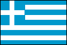ギリシャ Athens Museum Stadium Agora Parliament Cathedral Zeus Poseidon Thessaloniki Museum Hagios Demetrios Philippi Athos Stageira Pella Aigai Kalambaka Meteora Corfu Town Spyridon Achilleion Vlacherna Hosios Loukas Delphi Olympia Bassae Sparta Mystras Mycenae Epidaurus Corinth Canal Aegean Cruise Mykonos Delos Milos Santorini Thira Akrotiri Oia Nea Kameni Crete Knossos Samos Hera Pythagorio Kokkari Rhodes Palace Lindos Kolymbia
ユーゴスラビア Belgrade Museum Dubrovnik Zagreb
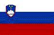スロベニア Ljubljana Bled Castle Island Church Bohinj Railway Vogel Slap Savica Vintgar Kranjska Gora Tolmin Skocjan Postojna Piran
クロアチア Dubrovnik Ston Hvar Stari Grad Split Trogir Šibenik Zadar Plitvička Rastoke Zagreb Mirogoj Rijeka Pula Rovinj Poreč
セルビア Belgrade Museum Novi Sad Petrovaradin Oplenac Romuliana Zaječar Djavolja varoš Prolom Petrova Crkva Novi Pazar Djurdjevi Stupovi Studenica Stari Ras Sopocani Zlatar Mileševa Zlatibor Sargan8
ボスニアヘルツェゴビナ Sarajevo Tunnel Groblje Visegrad Jablanica Mostar Mosque House
モンテネグロ Kotor Budva Sveti Stefan Skadar Lake Ostrog Crno Jezero Tara
コソボ Prishtinë Pećka Dečani Prizren Gracanica Stone Castle Shenjtë
マケドニア Skopje Teresa Chifte Hamam Ascension Skopsko Kale Mustafa Paşa Clement Stobi Rosoman Bitola Heraclea Ohrid Naum
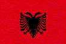アルバニア Tirana Krujë Durrës Berat Apollonia Gjirokaster Blue Eye Sarandë Butrint Ksamil Korçë
ルーマニア Bucharest
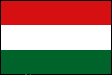ハンガリー Budapest Donau Bent
スロバキア Bratislava Dom Bratislavsky Hrad Michael Blue Church Stanica Tatry
チェコ Prague
オーストリア Wien Hofreitschule Stephansdom Rathaus Museum Staatsoper Musikverein Riesenrad Schönbrunn Belvedere Wienerwald Seegrotte Heiligenkreuz Hauptbahnhof Semmeringbahn Semmering Wachau Melk Hallstatt Bad Ischl Sankt Wolfgang Wolfgang Sankt Gilgen Mondsee Salzburg Eisriesenwelt Zell am See Franz Josefs Höhe Heiligenblut Lienz Tratzberg Hall in Tirol Innsbruck
イタリア Rome Coliseum Pantheon Trevi Piazza Spagna Bocca della Verità Navona Naples Pompei Capri Positano Amalfi Matera Alberobello Messina Taormina Castelmola Caltagirone Villa Casale Agrigento Monreale Palermo Assisi Spello Orvieto Siena San Gimignano Florence Uffizi Piazza Signoria Cattedrale Piazzale Michelangelo Pisa Bologna Ravenna Venice I Musici Bolzano Furnes Carezza Pordoi Falzarego Cristallo Misurina Cortina Padova Vicenza Verona Milan Last Supper Scala Como Torino Holy Shroud Genova
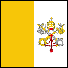バチカン市国 Vatican
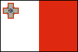マルタ Valletta Cathedral Carnival Senglea Birgu Ħaġar Qim Hypogeum Mdina Rabat Blue Grotto Marsaxlokk Gozo Citadel Ggantija Calypso Xlendi
スイス Bern Jungfraujochbahn Grindelwald Lugano Zurich
 東ドイツ Berlin
Pergamon Museum Dom
Alexanderplatz
Potsdamerplatz
Gemaldegalerie
Hauptbahnhof Potsdam
Meissen Dresden
Leipzig
Weimar
Erfurt
Eisenach Wartburg Muskau
東ドイツ Berlin
Pergamon Museum Dom
Alexanderplatz
Potsdamerplatz
Gemaldegalerie
Hauptbahnhof Potsdam
Meissen Dresden
Leipzig
Weimar
Erfurt
Eisenach Wartburg Muskau
 ドイツ
Lubeck Hamburg
Bremen Hameln
Munden Kassel
Soest Trier
Bonn Koln
Aachen Koblenz Boppard
Rhein
Lorelei Rudesheim
Frankfurt
Heidelberg Speyer
Hohenzollern Lindau
Reichenau
Unteruhldingen Neuschwanstein
Wieskerche
Oberammergau Munchen
Alt Pinakothek Nymphenburg
Berchtesgaden
Augsburg Nordlingen
Dinkelsbuhl Rothenburg
Nurnberg Bamberg
ドイツ
Lubeck Hamburg
Bremen Hameln
Munden Kassel
Soest Trier
Bonn Koln
Aachen Koblenz Boppard
Rhein
Lorelei Rudesheim
Frankfurt
Heidelberg Speyer
Hohenzollern Lindau
Reichenau
Unteruhldingen Neuschwanstein
Wieskerche
Oberammergau Munchen
Alt Pinakothek Nymphenburg
Berchtesgaden
Augsburg Nordlingen
Dinkelsbuhl Rothenburg
Nurnberg Bamberg
ルクセンブルグ Luxembourg
フランス Paris Louvre Notre Dame Eiffel L'Opéra Orsay Orangerie Palais Royal Madeleine St.Roch Vendôme Lido Moulin Rouge Moulin de la Galette Notre-Dame de Lorette Montmartre Grand Palais Liberty Invalides Luxembourg Sainte Chapelle L'Olympia Pantheon Gare de l'Est Gare du Nord Versailles Fontainebleau Chambord Chenonceau Amboise Reims Champagne Chablis Vézelay Mont Saint Michel Atelier Millet Marseille If Island Bonifacio
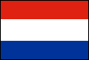オランダ Amsterdam Rijksmuseum
 ベルギー Brussels
ベルギー Brussels
イギリス London Buckingham Westminster Abbey St.Paul's Cathedral Tower Bridge Tower of London British Museum National Gallery Piccadilly Circus Royal Opera House St.Pancras Greenwich Windsor Stonehenge Bath Cotswolds
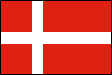デンマーク Copenhagen Kronborg Slot Frederiksborg Slot
フィンランド Helsinki Suomenlinna Silya Line
 スウェーデン
Stockholm
スウェーデン
Stockholm
 ノルウェー
Oslo Nasjonalgalleriet
Bergen Sogne Fjord
ノルウェー
Oslo Nasjonalgalleriet
Bergen Sogne Fjord
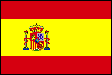スペイン Madrid Prado Las Ventas Toledo Segovia Avila Salamanca Leon Astorga Santiago de Compostela Trujillo Merida Sevilla Mijas Alhambra Mezquita Consuegra Campo de Criptana Cuenca Teruel Valencia Sitges Barcelona Parc Güell Santa Eulàlia Montserrat Canaria
ポルトガル Lisboa Santa Justa Roca Sintra Nazare Batalha Coimbra Aveiro Porto
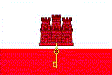ジブラルタル Gibraltar
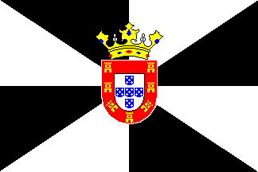セウタ Ceuta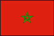モロッコ Casablanca Rabat Spartel Tanger Tetouan Chaouen Meknes Moulay Idriss Volubilis Fez Ifrane Ziz Merzouga Erfoud Tinghir Todra Dades Ouarzazate Tasselmant Ait Ben Haddou Tichka Marrakech Essaouira El Jadida
 チュニジア
Tunis Bardo Carthage
Antonini
Sidi Bou Said Dougga
Bullaregia Zaghouan
Sidi Oqba
Sidi Sahab Tozeur
Ong El Jemel Chott El Jerid
Douz Matmata
Hallouf Ghilane
El Jem Sousse
Nabeul Cap Bon
Kerkouane
チュニジア
Tunis Bardo Carthage
Antonini
Sidi Bou Said Dougga
Bullaregia Zaghouan
Sidi Oqba
Sidi Sahab Tozeur
Ong El Jemel Chott El Jerid
Douz Matmata
Hallouf Ghilane
El Jem Sousse
Nabeul Cap Bon
Kerkouane
エジプト Cairo Egyptian Museum Pyramid Port Said Suez Canal Alexandria Karnak Hatshepst Esna Edfu Kom Ombo Aswan Abusimbel
エチオピア Addis Ababa St.George Church Timkat St.Mary Church Lake Tana Blue Nile Falls Addis Zemen Fasiladas Palace Debre Birhan Selassie Lalibela Lalibela Cross Semera Asaita Gemeri Afrera Erta Ale Desert Dallol Rocksalt Assale Hamed Ela Abreha Atsbeha Wukro Chirkos Mekelle Lake Ziway Dorse Lake Chamo Konso Turmi Arbore Hamer Karo Nyangatom Mursi
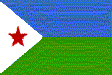ジブチ Djibouti Rift Ghoubet Tadjoura Assal Dikhil Abbe
 ケニヤ Nakuru Masai Mara
Amboseli
ケニヤ Nakuru Masai Mara
Amboseli
タンザニア Kilimanjaro
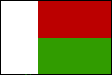マダガスカル Antananrivo Baobab Avenue Morandava Kirindy Morombe Andavadoaka Salary Berenty Fort Dauphin Ehoala Andohahela Nahanpoana Perinet Lemurs Park Ambohimanga Tsingy Rouges Antsiranana Nosy Be Nosy Komba NosyTanikely
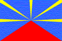レユニオン Le Port Salazie Hell Bourg
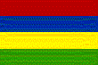モーリシャス Port Louis GangaTalao Aubineaux
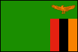ザンビア Micro Flight Victoria Falls Bridge
ジンバブエ Victoria Falls Airport
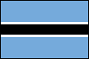ボツワナ Kalahari Okavango Chobe Elephant Sands Nxai Pan Makgadikgadi Pan Ntwetwe Pan
ナミビア Windhoek Etosha Himba Twyfelfontein Spitzkoppe Zeila Swakopmund Desert Welwitschia Moon Landscape Walvis Bay Dune 7 Kuiseb Pass Tropic Sesriem Canyon Sossusvlei Dune 45 Namib Desert Fish River Canyon
モザンビーク Maputo
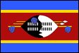スワジランド Ezulwini
南アフリカ Johannesburg Kruger Blyde Giant's Castle Sterkfontein Rouxville Reinet Tsitsikamma Southernmost Hermanus Cape Town Cape Point Boulders Duiker Botanical Stellenbosch Rooiwal Suid

 アメリカ合衆国
Mckinley Columbia Glacier
Seattle Rainier
Helens Portland Crown Point Multnomah Hood
Hood River
Eclipse Redwood
San Francisco
Cable Car
Twin Peaks
City Hall Alcatraz
Emeryville
Sacramento Yosemite Falls
Los Angeles
Disneyland Barringer
Sedona Lemmon Pima
Lowell Grand Canyon Old Faithful Reno
Salt
Lake City
Temple Square Grand Junction
Glenwood Springs
Fraser Denver Mammoth Caves Chicago
Board of Trade
Loop Art Institute
Cloud Gate Union
Albany Tanglewood New York
Liberty NYSE
Trinity
Ground Zero Opera
Philharmonic Broadway Lion King
Chicago Phantom
Blue Note Village
Vanguard Yankees UN
Museum AMNH
PanAm
Pennsylvania St. Louis
New Orleans Lake Pontchartrain Causeway
Florida Keys Hawaii
Guam
アメリカ合衆国
Mckinley Columbia Glacier
Seattle Rainier
Helens Portland Crown Point Multnomah Hood
Hood River
Eclipse Redwood
San Francisco
Cable Car
Twin Peaks
City Hall Alcatraz
Emeryville
Sacramento Yosemite Falls
Los Angeles
Disneyland Barringer
Sedona Lemmon Pima
Lowell Grand Canyon Old Faithful Reno
Salt
Lake City
Temple Square Grand Junction
Glenwood Springs
Fraser Denver Mammoth Caves Chicago
Board of Trade
Loop Art Institute
Cloud Gate Union
Albany Tanglewood New York
Liberty NYSE
Trinity
Ground Zero Opera
Philharmonic Broadway Lion King
Chicago Phantom
Blue Note Village
Vanguard Yankees UN
Museum AMNH
PanAm
Pennsylvania St. Louis
New Orleans Lake Pontchartrain Causeway
Florida Keys Hawaii
Guam
メキシコ Mexico City Museo Universidad Teotihuacán Tembleque Ensenada Guadalajara Tequila Morelia Cuitzeo Guanajuato San Miguel de Allende Querétaro Manzanillo Cuernavaca Xochicalco Taxco Acapulco San Matias Puebla Oaxaca Monte Albán Hierve El Agua Sierra Madre Tlacotalpan La Venta Palenque Misol Ha Agua Azul Campeche Sayil Kabah Uxmal Mérida Izamal Chichén Itzá Cenote Ik Kil Kaua Tulum Cenote Yax Kin Cancun
ベリーズ Belise City Altun Ha Belmopan Cahal Pech
グアテマラ Tikal Petencito Flores Quirigua Chichicastenango Solola Atitlan Guatemala City Antigua Puerto Quetzal
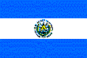エルサルバドル Tazumal Joya de Cerén San Salvador
ニカラグア Leon Leon Viejo Corinto Managua Granada Lago Nicaragua
コスタリカ Monteverde Sarchi Muerte Cartago San José
 パナマ
Panama City Viejo
Panama Canal Colon
San Lorenzo Portobelo
パナマ
Panama City Viejo
Panama Canal Colon
San Lorenzo Portobelo
 キューバ
Habana
キューバ
Habana
ジャマイカ Montego Bay
ペルー Lima Machu Picchu Ollantaytambo Cuzco Nazca Line
 ブラジル Amazon River Rio Carnival
Rio De Janeiro
Copacabana Ipanema
ブラジル Amazon River Rio Carnival
Rio De Janeiro
Copacabana Ipanema
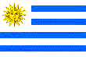ウルグアイ Montevideo La Plata
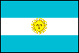アルゼンチン Iguazu Falls Buenos Aires Boca Southern Cross Frias Nahuel Huapi Bariloche Campanario Mascardi Los Alerces Cueva de las Manos Caldiel Viedma Chalten Fitz Roy Moreno Garibaldi Ushuaia Fuego Tierra Mayor
チリ Santiago Valparaiso Sewell Colchagua Temuco Puerto Varas Petrohue Todos Los Santos Puerto Peulla Paine Gray Punta Arenas Punta Delgada Glaciar Pio XI Cabo Froward Canal Beagle Rapa Nui
 ポリネシア
ポリネシア
マーシャル諸島
Majuro Laura
 オーストラリア
Sydney Blue Mountains
Melbourne
Phillip Island
Great Ocean Road Twelve Apostles
Loch Ard Gorge
Kennett River Cairns Green Island Norman Reef
Kuranda Rail
Uluru Kata Tjuta
Flight Light
Camel Perth Pinnacles
Nilgen Lancelin
Hobart Richmond
Bonorong Mt.Field
Hartz Mountains
オーストラリア
Sydney Blue Mountains
Melbourne
Phillip Island
Great Ocean Road Twelve Apostles
Loch Ard Gorge
Kennett River Cairns Green Island Norman Reef
Kuranda Rail
Uluru Kata Tjuta
Flight Light
Camel Perth Pinnacles
Nilgen Lancelin
Hobart Richmond
Bonorong Mt.Field
Hartz Mountains
 ニュージーランド
Auckland Harbor Rangitoto
Waiheke Tiritiri
Matangi Kauri Bay of
Islands 90mile Beach
Cape Reinga Wairere
Waitomo Rotorua Waimangu Huka
Taupo Tongariro
Wellington
Tranz Scenic
Christchurch Tekapo Mt.Cook
Kawarau
Milford Sound
Queenstown
Taieri
Moeraki Otago
Dunedin
ニュージーランド
Auckland Harbor Rangitoto
Waiheke Tiritiri
Matangi Kauri Bay of
Islands 90mile Beach
Cape Reinga Wairere
Waitomo Rotorua Waimangu Huka
Taupo Tongariro
Wellington
Tranz Scenic
Christchurch Tekapo Mt.Cook
Kawarau
Milford Sound
Queenstown
Taieri
Moeraki Otago
Dunedin
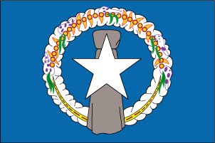北マリアナ連邦 Rota
日本 Rebun Island Lake Masyu Kushiro Hakodate Juniko Oirase Stream Matsushima Yomei Gate Oze Minami-Torishima Yokohama Mt. Fuji Ursa Minor Kamikochi Kenroku Park Nachi Kinkaku Temple Kiyomizu Temple Koryu Temple Ryoan Temple Chionin Temple Todai Temple Horyu Temple Yoshino Hashidate Himeji Castle Miyajima Kintai Bridge Akiyoshi Cave Naruto Strait Kunisaki Takachiho Naha Syurijo Seifautaki Manzamo Tokyo Kokyo Eclipse
 Google Photos
Google Maps
Travel Best Time
Weather Database
Weather Long Term Forecast Beauties and Children
Google Photos
Google Maps
Travel Best Time
Weather Database
Weather Long Term Forecast Beauties and Children